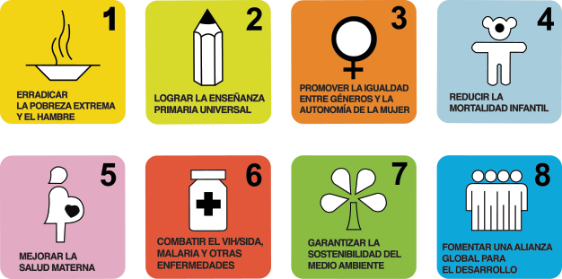
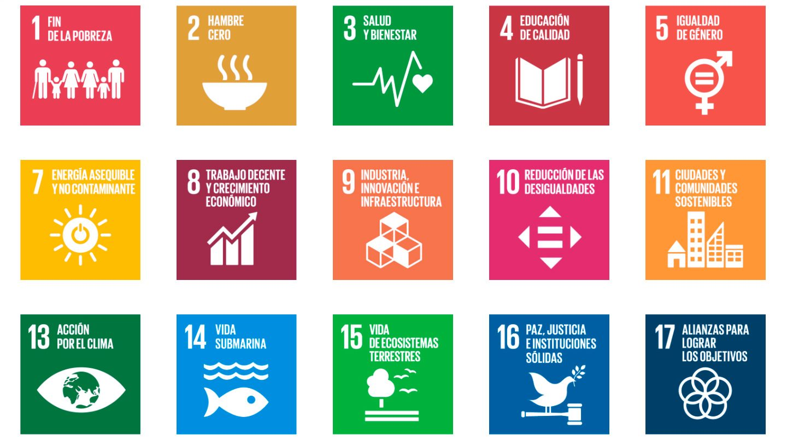
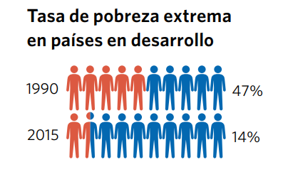
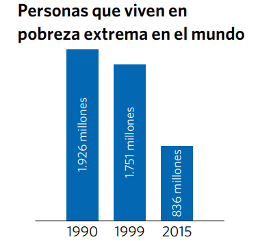
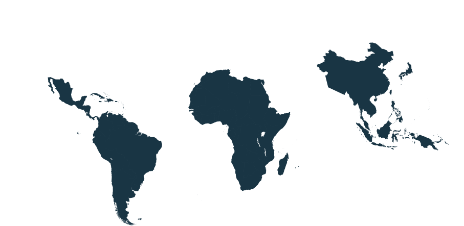
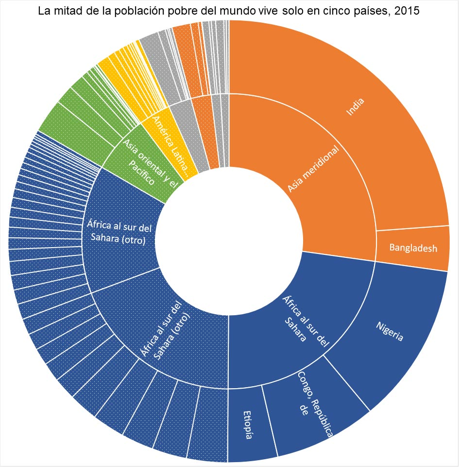

Los 193 países en el ONU encontrarse juntos en 2000 para hablar sobre los problemas en el mundo. Ellos crearon 8 metas lograr por 2015.
El ONU ví la situación se puso mejor pero no era perfecta. El ONU crearon 17 más metas lograr par 2030.
 El problema es la pobreza extrema y el hambre en el mundo. Gentes en algunos países viven usando solo 1,90 dólares diarios. El mayoría de persona quien viviendo debajo de umbral de pobreza es en Asia meridional y África subsahariana. Gentes quien viven en los países pequeños en un conflicto a veces vivien debajo de umbral de pobreza tambien.
 Para más información, va a esto enlace de web aquí
Hay muchos algunas que causas el problema como:
-La escasez de alimentos y malgastan que es común en países pequeno o desarrolla.
-Las personas que viven con menos de $2 dólares diarios gastan la mayor parte de sus dinero en
alimentos y apenas pueden permitirse lo suficiente para sobrevivir.
-El cambio climático está dañando los alimentos y agua potable.
-Y más
Hay mucha pobreza en todo el mundo. Especialmente en África, Asia y sudamérica. Hay muchos países en esos continentes que tienen una mayoría de la población en la pobreza extrema. Cuando estés en la pobreza extrema, está muy deficil a escapa.
Afecta la gente en los áreas que no tienen acceso a formas a ganar dinero. Hay ciudades en África subsahariana.
Grupos han construido muchas escuelas por todo de África. Esto ha ayudado a educar muchas personas. Educación ayudan a obtener mejor trabajo y más dinero. La tasa de pobreza se ha reducido a la mitad desde 1990. Muchas alimentos fueron enviados a África, especialmente a lugares donde no se puede cultivar. Esto ha llevado a una disminución de la gente no tiene comida.
-Hay muchas retos que enfrentamos para superar el problema.
-Casi la mitad de las personas empleadas en el mundo trabajan en condiciones vulnerables.
-Las mujeres enfrentan mayor riesgo de vivir en pobreza.
Muchos factores contribuyen al aumento de la vulnerabilidad de la mujer a la pobreza.
Estos son el acceso desigual al trabajo remunerado, menores ganancias, falta de protección
social y acceso limitado a bienes, incluyendo tierras y propiedades.
-Los obstáculos para el hambre incluyeron precios volátiles de los productos básicos,
precios más altos de alimentos y energía, aumento del desempleo y recesiones económicas a
fines de la década de 1990 y en el período 2008-2009.
-Debemos crean más oportunidades de trabajo en África.
-Invertir en la economía Africana para que puedan desarrollar.
-Construir granjas cubiertas para que la comida pueda ser cultivada en el Desierto del Sahara.
-Distribuir muchas filtros de agua para que las personas pueden tener agua limpia.
-Crear más oportunidades seguro de educación y trabajar por las niñas y mujeres.
-Apoyar a las organizaciones benéficas que están tratando de ayudar con el problema.
Para más información, va a https://www.un.org/sustainabledevelopment/es/poverty/
Para más información sobre la otros objetivos, va a https://www.un.org/sustainabledevelopment/es/sustainable-development-goals/